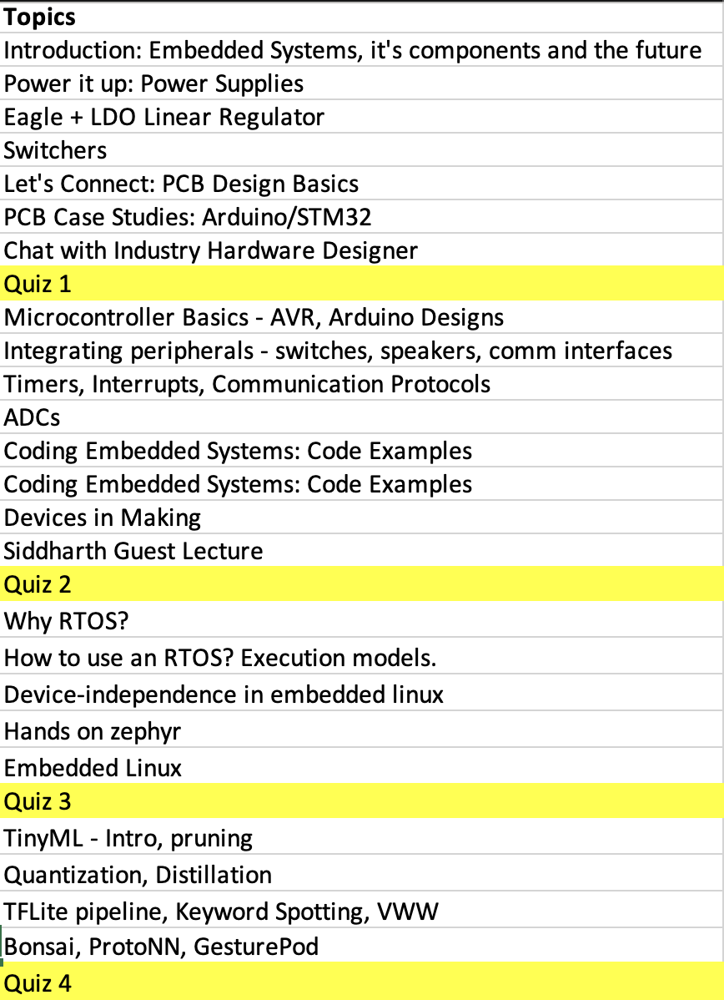

The embedded systems course is designed to provide insight into how electronic products are designed and manufactured. The course is divided into 4 parts:
- Module 1: Power it Up: Starting from developing a deep understanding of how power supplies are designed and used, we do bare bones chip-level design. We build microcontroller based designs on our own printed circuit boards.
- Module 2: Connect it together: We learn how to interface different types of peripherals with microcontrollers and the different types of interfaces that are used in embedded system design. We discuss both aspects - the computer architecture and the software design of the systems. We discuss the internal architecture design as well as software usage for the various modules in a microcontroller apart from the CPU - timers, interrupts, Analog to Digital Converters (ADCs).
We end this module with a discussion of the state of the art devices built and a showcase that the underlying hardware remains surprisingly simple. - Module 3: Modularise and Sustain: Next, we discuss how a real-time operating system (RTOS) simplifies embedded software design and provides facilities for automatic virtualization and memory management. We see code examples from the popular FreeRTOS and Zephyr RTOS systems. We concluded this module by touching briefly on embedded linux - the world of yocto and buildroot.
- Module 4: Add Magic: Finally, we see how machine learning is sprinkling magic into embedded systems and helping build devices of the future. Here, we explore the world of TinyML and bring together learnings from various courses - Foundations of Computer Systems, Machine Learning, Deep Learning, etc.
The project based component of the course involved two projects - one including bare bones design with a microcontroller and the second using an ESP32 with an RTOS. The course had a weightage of 50-50% on the theory and practical components.
Lectures at a glance

Slides
I’ve tried my best to link directly to external sources and acknowledge any images/code used. Please write to me if you see an attribution missing.
Guests
Thanks to Mahadev Gopalakrishnan and Dr Siddharth for guest lectures!
References
- Practical Electronics for Inventors, by Paul Scherz
- The Art of Electronics, 3rd Edition - Paul Horovitz, Winfield Hill
- Make: AVR Programming, by Elliot Williams
License
MIT